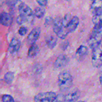
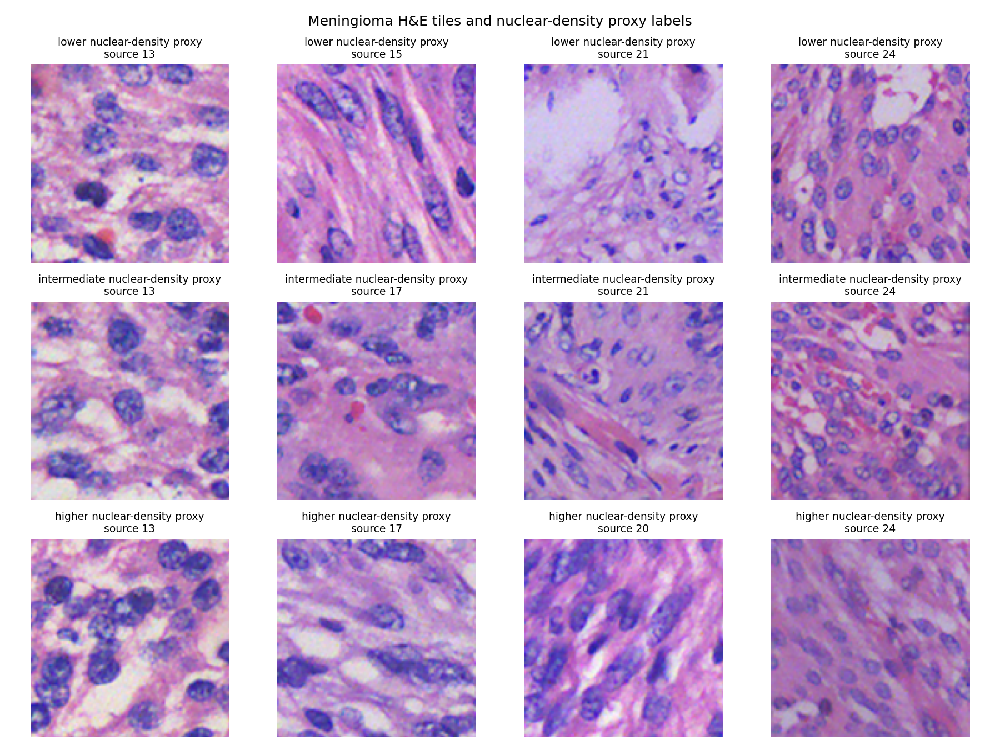
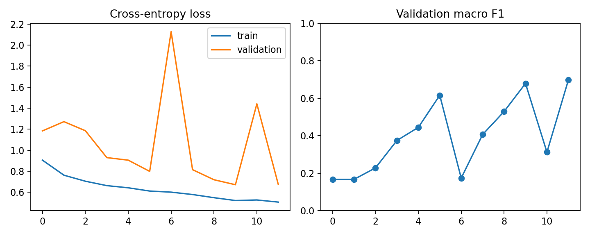
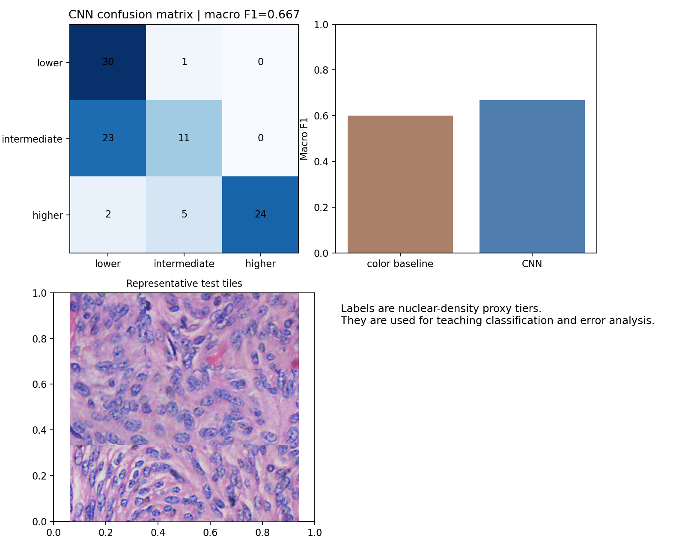

KYDW 本科生科研入门体验项目
实践项目参考答案 03：脑膜瘤 H&E 形态代理分类
使用固定的真实脑膜瘤 H&E 图块数据，按原图划分训练、验证和测试集合，比较颜色统计基线与小型 CNN。
参考答案仅做参考，并非代表唯一正确结果，效果以运行结果为准，具体代码形式可自行调整。打开公开 Kaggle Notebook 后，先复制到自己的账户，再修改题目中标记的区域并运行。
读取固定课程数据
只查找指定 NPZ，避免读取 Kaggle 中其他大图。
candidates = sorted(Path('/kaggle/input').rglob('meningioma_public_morphology_tiles.npz'))
assert candidates, '请挂载课程数据集。'
data = np.load(candidates[0], allow_pickle=True)
images = data['images']
labels = data['labels']
source_image_ids = data['source_image_ids'].astype(str)
split = data['split'].astype(str)数据核对
每个集合分别统计图块、原图编号和三类标签数量。
summary = {
kind: {
'patches': int((split == kind).sum()),
'sources': np.unique(source_image_ids[split == kind]).tolist(),
'class_counts': np.bincount(labels[split == kind], minlength=3).tolist(),
}
for kind in ('train', 'validation', 'test')
}
print(summary)颜色统计基线
RGB 均值和标准差先建立可解释的参照。
def color_features(batch):
z = batch.astype(np.float32) / 255.0
return np.c_[z.mean((1, 2)), z.std((1, 2))]
tr = np.where(split == 'train')[0]
te = np.where(split == 'test')[0]
baseline = LogisticRegression(max_iter=1200, class_weight='balanced')
baseline.fit(color_features(images)[tr], labels[tr])
base_f1 = f1_score(labels[te], baseline.predict(color_features(images)[te]), average='macro')小型 CNN
三组卷积模块提取局部纹理，全局池化后输出三类 logits。
def block(cin, cout):
return nn.Sequential(nn.Conv2d(cin, cout, 3, padding=1), nn.BatchNorm2d(cout), nn.ReLU(), nn.MaxPool2d(2))
self.features = nn.Sequential(block(3, 24), block(24, 48), block(48, 96), nn.AdaptiveAvgPool2d(1))
self.classifier = nn.Linear(96, 3)训练与染色变化
验证集选择模型，测试集计算宏平均 F1；随后固定模型并改变测试图块颜色。
optimizer.zero_grad()
logits = model(x.to(DEVICE))
loss = loss_fn(logits, y.to(DEVICE))
loss.backward()
optimizer.step()
# 测试完成后对红、蓝通道作固定变化，再由同一模型重新预测。本次参考结果
颜色统计基线宏平均 F1 为 0.601，CNN 准确率为 0.677、宏平均 F1 为 0.667。固定染色变化后宏平均 F1 降至 0.188，说明当前模型对染色变化不稳健。




结果文件
完成参考版运行后，按下列文件核对数据、图像和指标。
task3_sample_he_tile.pngtask3_data_visualization.pngtask3_training_curve.pngtask3_prediction_visualization.pngtask3_pytorch_result.json